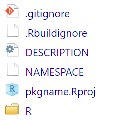
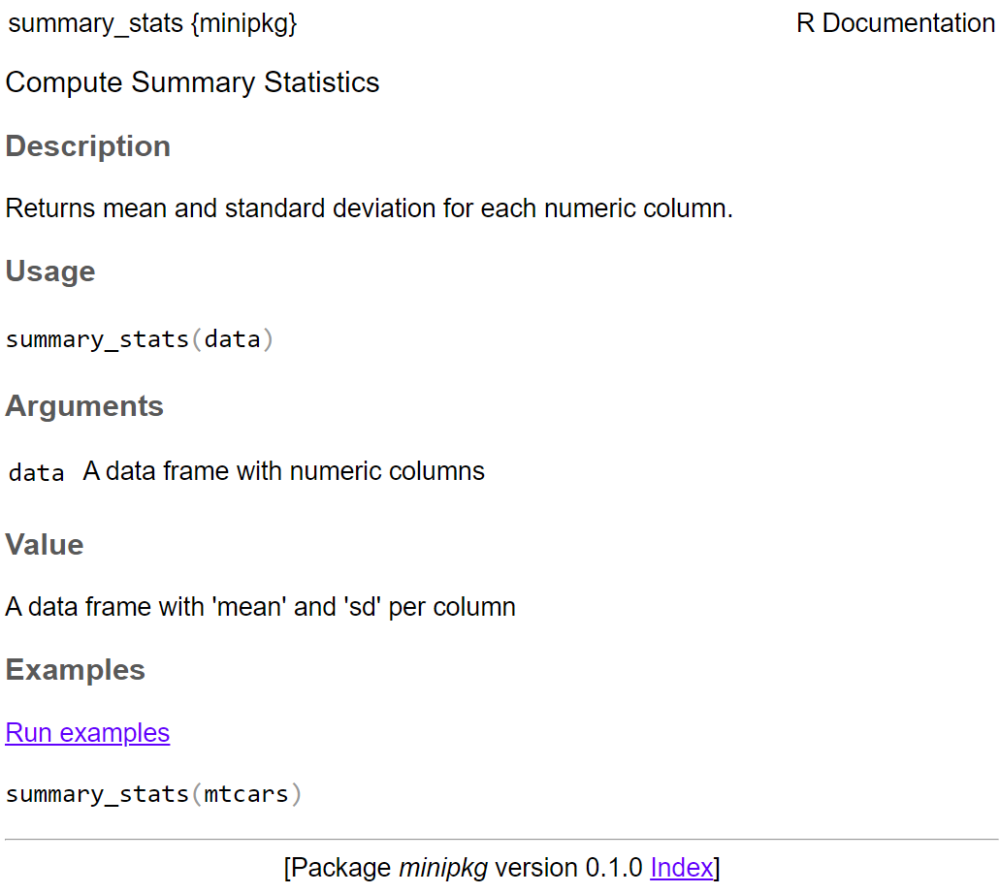

Short Course on R Tools
Develop your own professional R package
Marquette University
SCoRT - Summer 2025
Outline
- Why Build an R Package?
- System Setup
- Package Structure
- Package States in R
- Create a Package
- Functions & Documentation
- Writing Functions and Documenting
- Build a Simple Package from Scratch
📦 R Packages: The Fundamental Unit
In R, the fundamental unit of shareable code is the package.
A package bundles together:
- 🧑💻 Code
- 📊 Data
- 📚 Documentation
- 🧪 Tests
➡️ All in one place, easy to share with others.
📦 You Already Use Packages!
If you’re here, you already know how to work with packages:
🎯 Goal of This Talk
This workshop is about moving from using packages ➡️ to developing your own.
Why?
- 🚀 To share your code with others
- 📦 To make your code easy to install, use, and learn
- ⏳ To save yourself time with conventions and structure
System Setup
Make sure you have:
- 🛠 The latest version of R.
- 🛠 The latest version of RStudio.
📦 Key Packages
devtools: Simplifies package development by wrapping complex workflows into easy commandsroxygen2: Generates documentation from special comments in your function codetestthat: Provides a framework for unit testing and ensures your functions work correctly and safely over timeknitr: Powers dynamic report generation and vignette building that integrates code, results, and text using R Markdown
💡 These tools help automate, test, document, and share your package like a pro.
Package Structure
🧩 Directory layout
mypkg/
├── DESCRIPTION # Package metadata
├── NAMESPACE # Exported functions & imports
├── R/ # Your R functions
└── man/ # Auto-generated documentation💡 Tip: Many folders in an R package are optional and included as needed.
🧩 Directory layout
mypkg/
├── DESCRIPTION # Package metadata
├── NAMESPACE # Exported functions & imports
├── R/ # Your R functions
├── man/ # Auto-generated documentation
├── tests/ # Unit tests with testthat
├── vignettes/ # Long-form documentation (Rmd)
├── data/ # Data sets (.rda files)
└── inst/ # Installed files (e.g., app/, extdata/)🛠 Package States in R
R packages transition through five development states:
- 🗂️ Source: your raw package folder
- 📦 Bundled: compressed .tar.gz for sharing
- 🧱 Binary: platform-specific precompiled version
- 📚 Installed: available in your R library
- 🧠 In-Memory: actively loaded via library()
Understanding these states helps you manage installation, sharing, and usage workflows.
🗂️ Source Package
A source package is just a folder with a specific structure:
DESCRIPTIONfile
R/folder with.Rfiles
- Optional:
man/,tests/,vignettes/
It’s editable and human-readable — your starting point for development.
📦 Bundled Package
A bundled package is a compressed .tar.gz file created from a source package.
- Commonly called a source tarball
- Created using
devtools::build() - Platform-independent format for distribution
It acts as a transportable unit — not directly usable until installed.
🧱 Binary Package
A binary package is a platform-specific compiled package:
- Windows:
.zip - macOS:
.tgz - Created using
devtools::build(binary = TRUE)
Ideal for users without development tools — typically distributed by CRAN.
📚 Installed Package
An installed package is one that’s been unpacked and placed into a library folder.
- No longer a single file
- Ready to be loaded into memory
install.packages()ordevtools::install_*()bring packages into this state.
🧠 In-Memory Package
An in-memory package is an installed package that’s been loaded into the R session.
- Use
library(pkgname)to load - Makes all exported functions and objects available
Use
library()to see loaded packages.
🔁 Transitioning Between States

📦 Package vs. 📚 Library
- Package → bundle of code, data, docs, tests
- Library → directory on your computer that contains installed packages
👉 Think of a library as a bookshelf full of packages.
⚠️ Common Confusion
It’s common to hear people say:
“I loaded the dplyr library.”
But actually:
- dplyr is a package
- It lives inside a library
- You load it with
library(dplyr)
👉 A library is just where packages live (a directory)
📚 Multiple Libraries in R
- R allows you to have multiple library paths on your system
- Each library contains a set of installed packages
- Check active library paths with:
🚫 Avoid library() Inside Packages
Do not use library() or require() inside your package code
- Packages declare dependencies via DESCRIPTION and NAMESPACE
library()is for scripts and interactive sessions, not for packages
Instead, use:
- Imports: in DESCRIPTION
@importor@importFromin Roxygen2 comments
✅ This is one of the biggest mental shifts when moving from scripts to package development
Create a Package
Before creating your R package, you need to choose a name.
🧠 This can be the hardest part of the process!
📛 Formal Naming Rules
A valid R package name must:
- Contain only letters, numbers, and periods (
.) - Start with a letter
- Not end with a period
❌ You cannot use:
- Hyphens
- - Underscores
_
🔍 Naming Tips for Shared Packages
If you plan to share your package:
- ✅ Choose a unique name that’s easy to Google
- 🔎 Avoid names already on CRAN or Bioconductor
- ⌨️ Stick to all lowercase — e.g., avoid
RGTK2vsRGtk2 - 🗣️ Prefer pronounceable names — easier to talk and think about
🧠 Naming Patterns and Examples
Evocative Names:
lubridate→ makes dates easier
r2d3→ tools for D3 visualizations
forcats→ tools for working with categorical variables
Abbreviations
Rcpp→ R + C++brms→ Bayesian Regression Models using Stan
🛠️ Creating Your Package
Once you have a name, create the package using either:
usethis::create_package("mypkg")
- RStudio UI:
File → New Project → New Directory → R Package
👉 Both options run the same function under the hood.
📦 What Gets Created?
R/folder → for your function code
DESCRIPTIONfile → metadata
NAMESPACEfile → exports/imports
mypkg.Rproj→ RStudio project file
.Rbuildignore,.gitignore→ build and Git helpers

📄 DESCRIPTION File
The DESCRIPTION file provides overall metadata about your package:
- Package name and version
- Author and maintainer info
- Dependencies (
Imports,Suggests)
- Description and license
- Build-related metadata
🧾 Sample DESCRIPTION File
Package: Rfssa
Title: Functional Singular Spectrum Analysis
Version: 3.1.0
Authors@R: c(
person("Hossein", "Haghbin", email = "haghbin@pgu.ac.ir", role = c("aut", "cre"), comment = c(ORCID = "0000-0001-8416-2354")),
person("Mehdi", "Maadooliat", email = "mehdi.maadooliat@mu.edu", role = "aut", comment = c(ORCID = "0000-0002-5408-2676"))
)
Maintainer: Hossein Haghbin <haghbin@pgu.ac.ir>
Description: Methods and tools for implementing functional singular spectrum analysis and related techniques.
License: GPL-3
Encoding: UTF-8
Roxygen: list(markdown = TRUE)
RoxygenNote: 7.2.3
Depends: R (>= 4.0.0)More Details DESCRIPTION
Package: Rfssa
Title: Functional Singular Spectrum Analysis
Version: 3.1.0
Authors@R: c(
person("Hossein", "Haghbin", email = "haghbin@pgu.ac.ir", role = c("aut", "cre"), comment = c(ORCID = "0000-0001-8416-2354")),
person("Mehdi", "Maadooliat", email = "mehdi.maadooliat@mu.edu", role = "aut", comment = c(ORCID = "0000-0002-5408-2676"))
)
Maintainer: Hossein Haghbin <haghbin@pgu.ac.ir>
Description: Methods and tools for implementing functional singular spectrum analysis and related techniques.
License: GPL-3
Encoding: UTF-8
Roxygen: list(markdown = TRUE)
RoxygenNote: 7.2.3
URL: https://github.com/haghbinh/Rfssa
LazyLoad: true
Imports: Rcpp,fda,lattice,plotly
LinkingTo: Rcpp, RcppArmadillo, RcppEigen,
Suggests:
knitr
Depends: R (>= 4.0.0)📝 Title vs. Description
Title
- One line
- No punctuation or markup
- Capitalize like a title
- Keep under ~65 characters
Description
- One paragraph, plain text
- Multiple sentences OK
- Should describe what the package does
🧪 Example from ggplot2:
Title: Create Elegant Data Visualisations Using the Grammar of Graphics
Description: A system for 'declaratively' creating graphics,
based on "The Grammar of Graphics". You provide the data,
tell 'ggplot2' how to map variables to aesthetics, what
graphical primitives to use, and it takes care of the details.📦 Imports vs. Suggests
Imports
- Packages required at runtime
- Automatically installed with your package
- Needed for core functionality
Suggests
- Optional or development-time dependencies
- Used in examples, tests, or vignettes
- Not required to run the core package
Use
usethis::use_package("pkg", type = "Imports")to manage these easily.
📂 NAMESPACE File
The NAMESPACE file defines the interface of your package.
It controls:
- What functions your package exports
- What functions it imports from other packages
- S3/S4 method registrations (if needed)
This file is auto-generated by roxygen2, so you typically don’t edit it by hand.
🧾 Example: NAMESPACE File
# Generated by roxygen2: do not edit by hand
S3method("*", funts)
export(as.funts)
import(shiny)
importFrom(ggplot2, ggplot)export()— makes a function available to usersimport()— brings in all exported objects from a packageimportFrom()— imports specific functionsS3method()— registers an S3 method
✍️ How to Generate NAMESPACE
In .R files:
Functions & Documentation
To add functionality to your package, you’ll write:
- ✅ Functions — saved as
.Rscripts in theR/folder
- 📝 Documentation — using roxygen2 comments above each function
Let’s walk through the process.
📂 Code Placement
All your functions go in the R/ folder.
Each .R file can contain one or more functions.
📝 Documenting Functions with Roxygen2
Use special comments starting with #' to write function documentation:
#' Sum of Square Function
#'
#' This function computes the Sum of Squares of a numeric vector
#'
#' @param x Numeric vector
#' @return Numeric sum of x
#'
#' @examples
#' x <- 1:5
#' y <- my_function(x)
#' print(y)
#'
my_function <- function(x) sum(x^2)This will generate help files in the man/ folder.
⚙️ Generate Documentation
After writing your function and roxygen2 comments, run:
This will:
Update the NAMESPACE file
Create
.Rdhelp files in the man/ folder
💡 You can also press Ctrl+Shift+D in RStudio.
Build a Simple Package from Scratch
🧱 Step 1: Create Your Package
Use usethis to create a new package directory:
This creates:
R/, DESCRIPTION, NAMESPACE
.Rproj,.gitignore,.RbuildignoreOpens new RStudio project for your package
2️⃣ Add a Dataset
Let’s include a built-in dataset (mtcars) for simplicity:
3️⃣ Create a Function
Create a new file: R/summary_stats.R
#' Compute Summary Statistics
#'
#' Returns mean and standard deviation for each numeric column.
#'
#' @param data A data frame with numeric columns
#' @return A data frame with `mean` and `sd` per column
#'
#' @examples
#' summary_stats(mtcars)
#'
#' @export
summary_stats <- function(data) {
numeric_data <- data[sapply(data, is.numeric)]
data.frame(
mean = sapply(numeric_data, mean),
sd = sapply(numeric_data, sd)
)
}4️⃣ Document the Function
Run the following command to generate docs:
This will:
Add
export(summary_stats)to your NAMESPACECreate man/summary_stats.Rd
5️⃣ Load and Test the Package
In the console:
6️⃣ Build and Install the Package
Build the package locally:
🚀 help("summary_stats")
Hands-on Exercises (30 min)
- Create a new package skeleton and add a simple function
- Write roxygen docs and generate help files
Resources & Further Reading
- Books: R Packages by Hadley Wickham (https://r-pkgs.org)
- devtools: https://devtools.r-lib.org
- usethis: helper functions
- CRAN Repository Policy: CRAN manual
🙏 Thank you!
Questions & Discussion